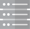

UE
MeNB
MME
SgNB
S-GW/P-GW
BACK TO CALL FLOW
This is the free demo result. For a full version of this website, please go to
https://www6.waybackmachinedownloader.com/website-downloader-online/scrape-all-files/